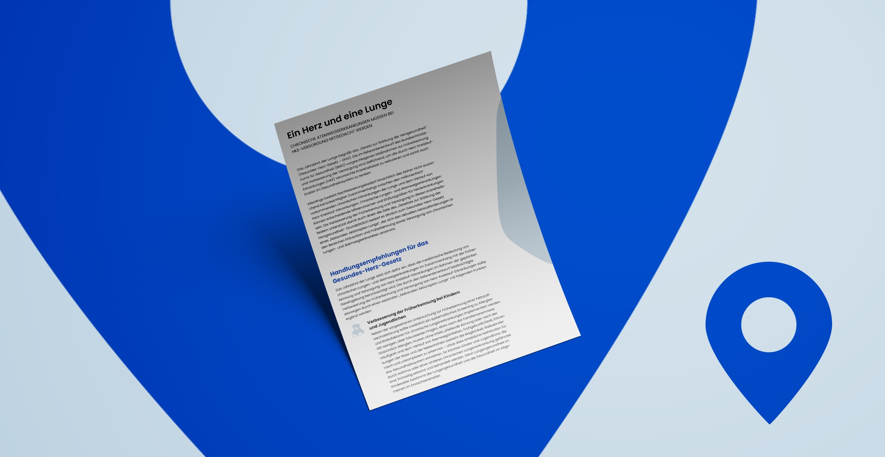
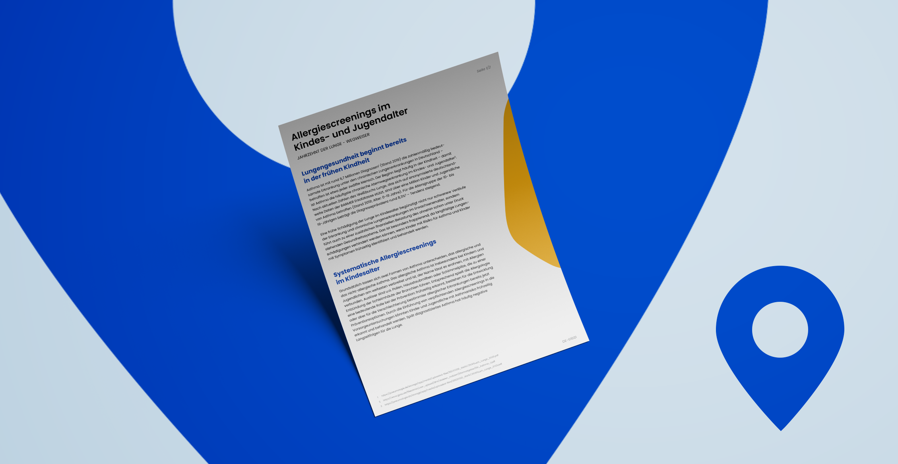

Das Jahrzehnt der Lunge begrüßt das „Gesetz zur Stärkung der Herzgesundheit" (Gesundes-Herz-Gesetz – GHG). Die im Referentenentwurf des BMG vorgeschlagenen Maßnahmen zur Früherkennung und Verbesserung der Versorgung sind zielführend …
Mehr erfahrenMit dem Kabinettsbeschluss zum Entwurf des Gesetzes zur Stärkung der Öffentlichen Gesundheit und der damit verbundenen Errichtung des BIPAM setzt die Bundesregierung ein zentrales gesundheitspolitisches Versprechen um …
Mehr erfahrenRauchen und Passivrauchen erhöhen das Risiko, an chronischen Lungen- und Atemwegserkrankungen zu erkranken. Obwohl Rauchen das größte vermeidbare Gesundheitsrisiko ist, bleibt die Raucherprävalenz in Deutschland besorgniserregend hoch …
Mehr erfahrenLungengesundheit beginnt bereits in der frühen Kindheit …
Mehr erfahren